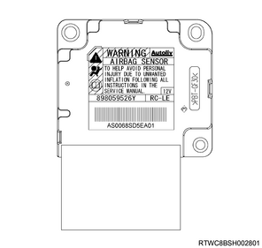
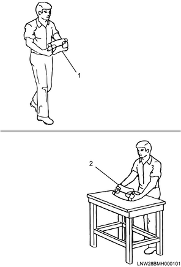
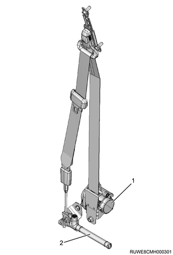

Maintenance precautions of restraint (All models)
1. Maintenance precautions of restraint
Warning
- When conducting maintenance of parts and harnesses including their peripherals, temporarily stop the SRS function according to "Procedure to deactivate the SRS" to prevent injury due to deployment of the SRS airbag or an unnecessary repair of the SRS airbag.
Note
- SRS control unit
- Driver airbag and passenger airbag
- Side airbag and curtain airbag
- Seat belt with pretensioner
- Lap pretensioner (For Australia)
- Front airbag sensor
- Side airbag sensor
- Door side airbag sensor
First, set the ignition switch to the LOCK position. Next, disconnect the battery or remove the SRS fuse. Do not perform any operations for at least 15 seconds after that because of a possibility that the SRS airbag may be deployed. In the maintenance procedure, it is necessary to remove the SRS fuse and disconnect the SRS airbag from the deployment circuit in order to prevent SRS parts from unnecessarily deploying.
When measuring the voltage and resistance, make sure to use the tools correctly, such as the scan tool, alternative load, adapter harness kit, connector test adapter kit, and digital multimeter.
Warning
- When performing maintenance of the SRS, do not use electrical testers other than those specified in this manual in order to prevent injury due to deployment of the SRS airbag.
Necessary repairs and inspections after a collision
If the SRS system components are damaged, they must be replaced. If the installation location for SRS components is damaged, it must also be replaced. Never use system components from other vehicles. No SRS system component should be disassembled or repaired. Replace these components with new parts.
Note
- Confirm the part numbers for the SRS parts to be used as replacements to confirm they are legitimate products.
Warning
- Make sure to check the part numbers and use the SRS components intended for the target vehicle, do not use SRS components from other vehicles or models.
Caution
- After repairing or replacing parts damaged in the collision, it is necessary to inspect the SRS airbag and steering column in order for the SRS airbag to operate properly.
- If the SRS control unit mounting bracket is visibly damaged, replace it with a new one.
- It is necessary to inspect the dimensions of the steering column regardless of whether the SRS airbag has been deployed in the collision.
Replacement and inspection of parts after a collision accompanied by deployment
It is necessary to replace the deployed airbag, seatbelt with pretensioner, lap pretensioner, SRS control unit, and each sensor after a collision accompanied by airbag deployment. It is necessary to inspect the SRS coil assembly for damage. Inspect the SRS coil assembly harness and connector for burns, melting, or damage caused by excessive heat. If the SRS coil assembly is damaged, replace the SRS coil assembly.
Note
- Because the side airbag cannot be replaced as a separate unit, replace the seat assembly. Each of the other airbags can be replaced as a separate unit.
Inspection of parts after a collision not accompanied by deployment
After the collision, it is necessary to inspect the SRS system and related parts even if the airbag has not been deployed. The related parts include the steering column, steering support bracket, instrument panel bracket, seat belt installation locations, each sensor, seat, etc. For each part, inspect for installation status, distortion, bent, cracks, or other damages.
Replacement guideline for SRS control unit and airbag sensor
After a collision accompanied by airbag deployment, the SRS control unit and the airbag sensor must be replaced. Conduct Diagnostic system check-SRS controls in case of SRS airbag warning light failure.
Note
- If the SRS function is normal, the SRS airbag warning light flashes 7 times before turning OFF.
Damaged harness
If the SRS harness is damaged, it is necessary to replace the SRS harness.
SRS component lead wire damage
If the lead wire for parts such as the SRS airbag, combination switch assembly (including the SRS coil assembly), seat belt with pretensioner, lap pretensioner, etc., is damaged, replace all of the components.
Procedure to deactivate the SRS
Removal
Set the ignition switch to "LOCK" and remove the key.
Remove the SRS fuse from the fuse relay box or disconnect the connection to the negative terminal of the battery.
Let stand as is for approximately 15 seconds or longer.
Note
- The fuse relay box is installed within the pocket of the instrument panel driver side lower cover.
- The illustration shows an RHD model.
Note
- When the SRS fuse is removed and the ignition switch is turned ON, the SRS airbag warning light will remain turned on without turning off, but this indicates that the SRS airbag is in a normal condition.
Procedure to restore the SRS
Installation
Set the ignition switch to "LOCK" and remove the key.
Confirm that the removed parts related to the SRS are securely connected.
Install the SRS fuse or connect the negative terminal of the battery.
Note
- Turn ON the ignition switch and verify that the SRS airbag warning light turns OFF after flashing 7 times. Perform the Diagnostic system check - SRS controls if the SRS airbag warning light does not operate properly.
Caution
- Do not expose the SRS airbag to a temperature exceeding 85 °C.
- Do not use an SRS airbag, SRS control unit, or airbag sensor if it was dropped for some reason.
- When the connectors for parts related to the SRS airbag, SRS control unit, or airbag sensor have been removed for repair, etc., verify that they fully fit upon reassembly.
- When replacing the SRS control unit, make sure to check that there is no dust or other foreign materials on the installation surface of the SRS control unit, and install the SRS control unit onto the installation surface properly.
- When installing the SRS airbag parts, make sure to tighten them to the specified torque.
- If the system is accidentally energized, an unnecessary DTC will be set to the SRS control unit. Therefore, do not energize the system unless all system parts are connected or there is a request from the diagnosis chart.
- Never conduct a circuit diagnosis using an unspecified tester.
- The diagnostic system check-SRS controls checks whether the SRS air bag warning light is working properly and gives guidance to the appropriate chart used for diagnosing functional failures in the system. Skipping these procedures result in a long diagnosis time, incorrect diagnosis, or replacement of incorrect parts. Therefore, perform the diagnostic system check-SRS controls first.
Caution label
Caution labels describing precautions specific to the SRS airbag are attached to the vehicle.
Note
- Sun visor at the passenger side
Note
- Passenger door side
Note
- Rear side of the driver airbag
Note
- Rear side of the passenger airbag
Caution label (Models with side airbags and curtain airbags)
A caution label is attached describing the special precautions for the models with side airbags and curtain airbags.
Note
- Driver door side
Note
- Passenger door side
Note
- curtain airbag
Warning
- Do not take apart, crush or puncture.
- Do not check a circuit by electric tester.
- Do not service, dispose or apply electric power to this unit.
- Do not heat in excess of 93℃
- Follow all instructions in the workshop manual.
Note
- SRS control unit

Warning
- During the maintenance procedure, be careful not to hit or shake the SRS control unit when handing it.
- If the SRS control unit is not properly installed to the vehicle, the SRS control unit does not operate properly when the ignition switch is turned ON, which may result in injury due to deployment of the SRS airbag.
Procedure to transport an undeployed airbag assembly
Take extra care when handling and storing an undeployed SRS airbag assembly. Should the SRS airbag happen to be deployed, materials on the surface of the SRS airbag may fly away due to sudden generation of gas.
Warning
- When transporting an undeployed airbag assembly, make sure to face the trim cover of the airbag outward to minimize the possibility of injury in case the SRS airbag is deployed.
Note
- Driver airbag

Note
- Passenger airbag

Warning
- Never carry the SRS airbag by hanging the harness or the connector leading from the SRS airbag on your hand.

- When transporting an undeployed airbag, face the trim cover outward.
- When putting down an undeployed airbag, make sure to face the trim cover upward.
Warning
- When storing an undeployed SRS airbag assembly or leaving an undeployed SRS airbag assembly on a working table or other locations, make sure that the trim cover of the SRS airbag assembly is facing upward to minimize the possibility of injury in case the airbag is deployed.
When handling a deployed SRS airbag assembly, safety precautions must be followed.
Warning
- Since the metal surface of the SRS airbag assembly becomes extremely hot after deployment, do not touch the metal section for approximately 30 minutes after deployment. In addition, do not place a deployed SRS airbag assembly close to any flammable items.
- When it is necessary to move a deployed SRS airbag assembly before it cools down, wear gloves and handle it by placing hands on the SRS airbag or the trim cover.
Caution
- If activation occurs, also replace the SRS coil assembly.
Handling of undeployed seat belts with pretensioners and lap pretensioners
Take extra care when handling and storing undeployed seat belts with pretensioners and lap pretensioners. In the unlikely event that a seat belt with pretensioner or a lap pretensioner has deployed, the sudden expansion of gas may cause items in the vicinity of the seat belt with pretensioner or lap pretensioner to be blown about.
Warning
- When transporting undeployed seat belts with pretensioners or lap pretensioners, make sure to face the gas generator section outwards to minimize the possibility of injury in case they deploy.
- Seat belts with pretensioners or lap pretensioners must never be carried by holding the harness or connectors that stick out from the seat belts with pretensioners or lap pretensioners.
Note
- Seat belt with pretensioner (Except for Australia)

Note
- Seat belt with pretensioner and lap pretensioner (For Australia)

- Seat belt with pretensioner
- Lap pretensioner
Handling of a deployed seat belt with pretensioner or lap pretensioner
When handling a deployed seat belt with pretensioner or lap pretensioner, wear work gloves and protective goggles in order to protect your hands and eyes from irritants and heat that may be generated.
Caution
- If activation occurs, also replace the SRS coil assembly.
Handling of airbag sensor
Caution
- When removing the sensors, turn the ignition switch OFF and wait for at least 15 seconds.
- Do not apply impacts, such as dropping the unit, to the sensors.
- If an impact, such as dropping the unit, is applied to the sensor, replace the applicable airbag sensor.
- If an airbag is deployed, make sure to replace the airbag sensor.
Front airbag sensor and side airbag sensor
Door side airbag sensor